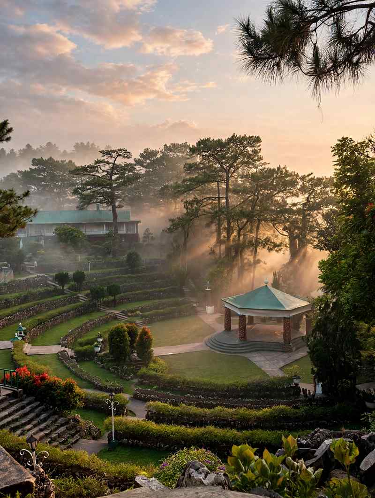

Yes to quieter, and a qualified yes to cheaper. Baguio spent much of 2026 with far fewer visitors than usual, hotels and restaurants answered with discounts, and the city has been working to win travellers back. Whether that is still the Baguio you will meet this weekend depends mostly on which day of the week you arrive.
The slump began in early spring. In the first days of April, Mayor Benjamin Magalong estimated that arrivals had fallen by as much as 40 to 50 percent, and city officials warned the drop could reach 60. The Hotel and Restaurant Association of Baguio said reservations at its members had dropped by at least 30 percent since early March, with some weekend occupancy as low as 17 percent. The cause was fuel: soaring pump prices linked to the Middle East conflict made the long road trip from Luzon's lowlands, where most of Baguio's visitors come from, harder to justify.
By mid-May, things had started to move again. Magalong said arrivals had been picking up for about two weeks, but the city was still 35 to 40 percent below previous years, with weekdays especially slow and some lodgings recording no bookings at all. The city's colour-coded traffic monitor, which flags heavy visitor volume in red, was showing red rarely and only for a few hours at a time.

What "Quieter" Looks Like Day to Day
The pattern the mayor described is the useful one for planning: visitor numbers rise mostly on weekends, while weekdays stay well below past years. Before the fuel crunch, he said, you could feel the crowds building by Friday. A Tuesday or Wednesday visit gets you the version of Baguio that residents prefer, with room to walk Session Road, a quicker table at popular restaurants and easier parking around Burnham Park.
Calm weekday mornings also suit places like the Bell Amphitheater inside Camp John Hay, a terraced garden bowl ringed by pines that is at its best in early light, before tour groups arrive.
Is It Actually Cheaper?
Partly. In April, hotels and restaurants introduced discounted room rates, bundled stay-and-dine packages, free meals and extended-stay deals to fill rooms. These are offers from individual businesses, not a citywide price cut, so they vary a lot from one property to the next and can change without notice. The practical move is to message a few places directly and ask what they are offering for your dates instead of relying on the listed rate.
Food at the market was also soft. In April, strawberries at the Baguio City Public Market ran ₱100 to ₱300 a kilo depending on quality, with pasalubong packs at about ₱100, as a surplus of fruit met slow sales.
Getting around has had its own adjustments. The city set up an emergency transport programme with 32 transport cooperatives, subsidising verified jeepney trips so units keep running, especially in the evening when queues tend to build.
What Has Changed Since Spring
Summer brought a second setback, this time from the weather. In early August, monsoon rains and tropical storms Luis and Maymay dropped about a month of rain in ten days. The city closed its public parks for a time, Kennon Road had temporary closures and rockslides, and arrivals fell sharply again, with some hotels recording no bookings on non-weekend days. Skies cleared by mid-August and recovery has been gradual since.
The biggest news for visitors is Burnham Lake. After nearly 11 months of rehabilitation that began on 1 October 2025, it reopened on 1 September 2026. Boat rentals were reportedly ₱150 to ₱200 an hour before the work, and after the reopening complaints surfaced of ₱350 to ₱450 for 30 minutes and ₱700 to ₱900 for an hour. The mayor ordered an investigation, the city says no increase has been approved, and boat operators without official receipts face notices of violation. Ask for the posted rate and an official receipt before you board.
As of 13 October, the lake remains open while the contractor repairs parts of the walkway in sections. Raised and uneven tiles have drawn complaints, so watch your footing, particularly with older relatives.
The weather has turned in Baguio's favour too. The temperature dropped to 16°C on 9 September as the "ber" months began. That is the cool air people come for, though August showed how quickly storms can close parks and roads, so check PAGASA's forecast before you commit to non-refundable bookings.
When the Quiet Ends
Weekday calm will not last through the calendar's busiest stretches. December brings Christmas crowds, February brings Panagbenga, and Holy Week in 2027 runs from 21 to 28 March. If you want the lowest crowds and the best chance of a discount, the weeks between now and early December are the easiest window. For a comparison of how peak season affects another popular region, see our look at October to December peak season in Cebu and Bohol.
How to Do Baguio Cheaply and Calmly
- Go midweek. Arrive Monday or Tuesday and leave Thursday or Friday morning.
- Ask for packages. Contact hotels directly and ask about stay-and-dine deals or free meals.
- Check rates before paying. At Burnham Lake especially, confirm the price and ask for an official receipt.
- Pack warm layers. Mornings and evenings are cool, and rain jackets are useful in the ber months.
- Keep dates flexible. A typhoon warning or a road closure can change plans, so choose bookings you can move.
For a day-by-day plan once you have chosen your dates, our Baguio City travel guide covers where to eat, stay and walk.
The Bottom Line
Baguio is quieter on weekdays than it has been in years, and travellers who ask for deals have a real chance of finding them. It is not a guaranteed bargain, and prices and crowds will climb again with the Christmas season and the festival calendar. Pick your days, ask before you book, and the city's cool air and pine-shaded corners are easier to enjoy than usual.
Sources
Baguio tourism suffers 50-percent decline – Philstar, 1 April 2026
Strawberry prices in Baguio drop as tourist numbers fall – Daily Tribune, 2 April 2026
Baguio City rolls out aid as tourism slump hits economy – BusinessWorld, 12 April 2026
Baguio tourism recovering, but businesses still hurting – Philstar, 16 May 2026
Baguio tourist arrivals improving, still below past levels – Magalong – GMA News, 17 May 2026
Summer capital tourist arrivals drop amid habagat – Daily Tribune, 17 August 2026
Baguio probes unauthorized boat rental hikes at Burnham Lake – Daily Tribune, 2 September 2026
Baguio temperature drops to 16 C as 'ber' months begin – Daily Tribune, 9 September 2026
Baguio asks patience over Burnham Lake repairs – Daily Tribune, 13 October 2026

Comments
No comments yet. Been here recently? Share a tip or ask a question.
Leave a Reply